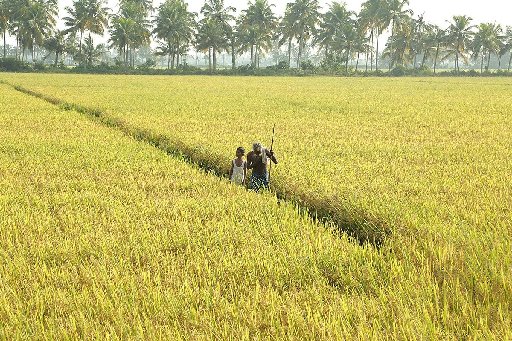

🌱 Kalatharaikkal Padasekharam — Nadurkolla Ward
Kalatharaikkal Padasekharam (paddy field cluster) situated in Nadurkolla Ward is the crown jewel of agricultural land in Kollayil Grama Panchayat. Centered around traditional wet rice cultivation, this padasekharam forms an irreplaceable pillar of the region's cultural heritage and rural agrarian economy. Along with enhancing the scenic lush green landscape, the paddy fields sustain the livelihoods of dozens of farming families.
In addition to paddy production, the wetland basin acts as a vital rainwater retention buffer, recharging shallow open wells and groundwater aquifers across adjoining wards during monsoon months. Converting fallow lands back into active cropping remains a primary focus of local agricultural initiatives.
Crop Diversification & Innovative Farming: Alongside traditional wet rice cycles, farmers in Kollayil actively cultivate mushrooms, flowers, sunflowers, millets, bananas, and organic vegetables. Initiatives such as Haritha Bhavanam (Green Homesteads) and Mazhamara (Rain Shelter farming) provide year-round crop protection against heavy monsoons.